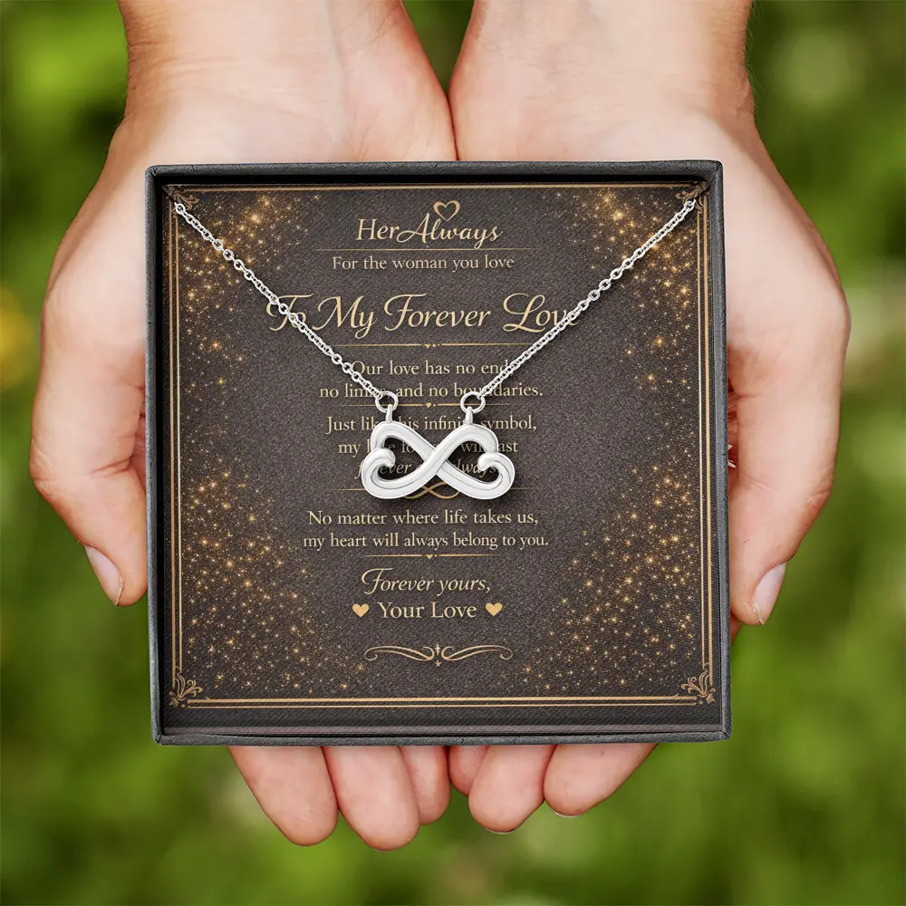
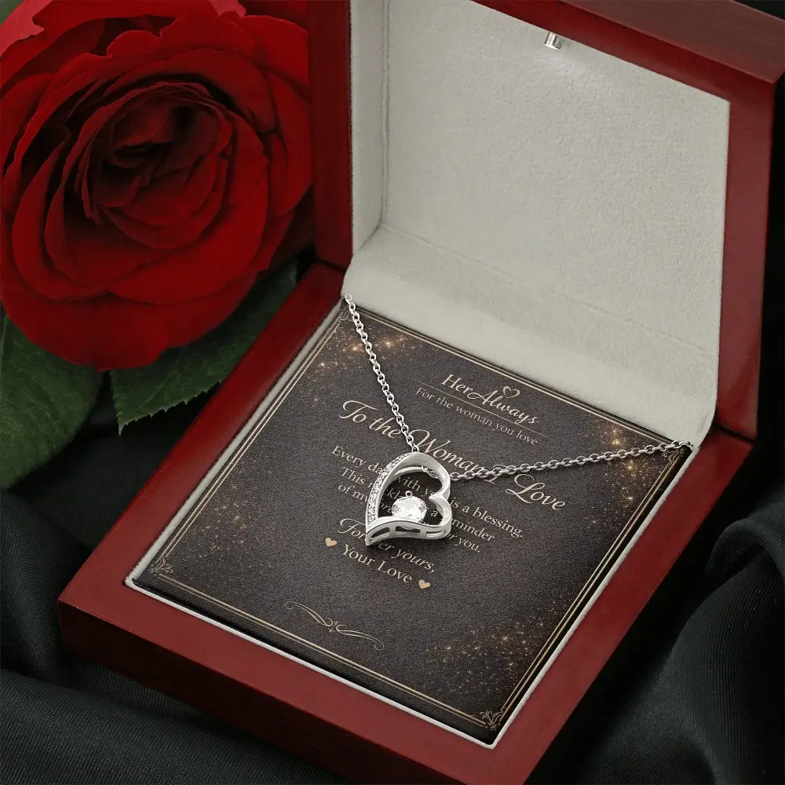
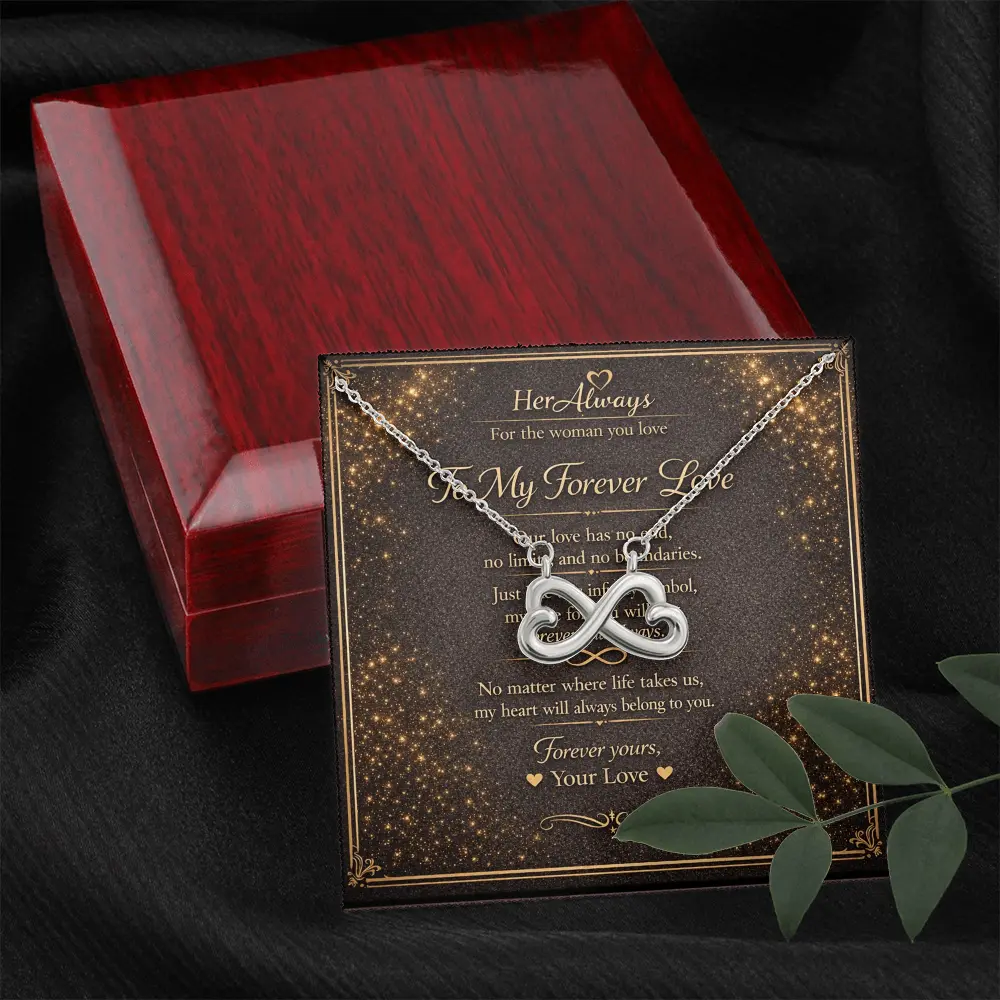

To give a necklace to your girlfriend, pick a calm moment when you are alone, hand her the box with a short card, and say one honest sentence about why you chose it. Let her read the card first, then ask if you can help her put it on. Match the style to her personality: a private handover for a shy girlfriend, a small hunt for a playful one.
If you feel nervous, that is normal and it is fine. Below you will find nine ways to give it, what to say, how to fasten the clasp, when to give it, and what to do if her reaction is quiet.
Quick Picks: Match the Way You Give It to Her
Before you give it | 9 ways | What to say | Putting it on | When | FAQ
| She is | Best way | Skip |
|---|---|---|
| Shy or private | 1. Simple handover or 4. Left in her morning | Work delivery, a reveal in front of other people |
| Romantic and sentimental | 3. A place that matters or 2. Dinner | Jokes that rush the moment |
| Playful, loves surprises | 6. Note trail or 7. Decoy box | A long hunt she may find tiring |
| Low-key, “you did not have to” | 4. Left in her morning or 1. Simple handover | A big production |
| Enjoys attention | 5. With flowers or 8. At work | Anything she cannot enjoy openly |
| Far away | 9. By mail, with a video call | Mailing it with no tracking and no call |
Not sure? Choose the simple handover. A calm, private moment with a handwritten card works for almost everyone.
Before You Give It: 4 Quick Checks
- She wears necklaces. Look at what she wears every day: the metal color, the length, how big the pendants are. Pick a style that fits it. If she rarely wears jewelry, a different gift is safer, and our guide to the best necklace gifts for your girlfriend helps you choose. If she has mentioned a metal allergy, check the materials first.
- It fits where you are. A simple necklace with a light message suits most couples after a couple of months. In the first weeks it can feel heavy. See the new girlfriend section of our first birthday guide for the “too much” check.
- You have tried the clasp. Open and close it yourself once. Small clasps are fiddly, and fumbling with one while she waits is the most common way a sweet moment turns awkward.
- The card is written. Write it a few days early. Rushing it the night before is where people end up with a line they do not mean.
If you are nervous, you are in good company. Research finds that givers often avoid personal, sentimental gifts for fear they will fall flat, while recipients often want them more than givers expect (Givi & Galak, 2017). That is why we suggest a handwritten card.
9 Ways to Give a Necklace to Your Girlfriend
Each idea below says who it suits and what can go wrong. Pick the one that matches her, not the one that sounds most impressive.
1. The Simple Handover
Choose a calm time with nowhere to rush off to, such as after dinner or on a quiet evening. Hand her the box with the card inside and let her open it herself. Give her a few seconds to look and read.
Best for: almost everyone, especially shy or private girlfriends.
Watch out: do not hover or narrate. Let the card do the talking.

2. Over Dinner
At home, set the closed box beside her plate. At a restaurant, wait until the table is cleared or dessert arrives, then hand it across the table.
Best for: a planned evening for two.
Watch out: never hide a necklace in food or a drink. It can be swallowed, chip a tooth or get damaged.
3. Somewhere That Matters to You Both
Take her to the place where you met, had your first date, or where she feels at peace. Tell her in one line why you picked it, then give her the box.
Best for: sentimental girlfriends who love shared memories.
Watch out: choose a spot quiet enough to hear each other, and have a back-up plan for bad weather.
4. Where She Will Find It in Her Morning
Put the closed box with a note next to her coffee cup, on her desk or on her pillow, in plain sight. She finds it in the middle of her normal routine, which makes it feel like a gentle surprise.
Best for: low-key girlfriends who say you should not have spent anything, and for shy ones.
Watch out: do not hide it inside a shoe or makeup bag. She might miss it for days, or crush it. Keep it visible, and call her later to hear how it went.
5. With Flowers
Tie the closed box to a bouquet with ribbon, or tuck it between the stems with the card on top. Tell her something is hidden in the flowers so it does not end up in the vase or the bin.

Best for: romantic girlfriends, and an easy upgrade to the simple handover.
Watch out: tie it down. A loose chain can slip out when she lifts the bouquet.
6. A Short Note Trail
Leave three small notes in three places, each one a short memory, with the last one leading to the box. Three is enough to feel like a game without turning into a chore.
Best for: playful girlfriends and puzzle lovers.
Watch out: keep it short, and do not leave clues in public places where they can disappear.
7. The Decoy Box
Put the jewelry box inside a bigger box meant for something boring, like a kitchen gadget. She opens the “boring” gift, then finds the real one inside.
Best for: couples who joke around together.
Watch out: keep the disappointed moment short, and skip this on emotional occasions or if she takes things literally.
8. A Delivery to Her Work
Arrange for the box to arrive in the afternoon with flowers or a treat, and add a card. It works best on a day when colleagues are getting gifts too, such as Valentine’s Day, so she is not the only one in the spotlight.
Best for: girlfriends who enjoy attention and workplaces that welcome deliveries.
Watch out: shy girlfriends may feel embarrassed. Check that she will be there and that deliveries are allowed.
9. By Mail, With a Video Call
Ship it with tracking so it arrives a day or two early. Ask her to leave it closed until the call, then open it together on video. Add a handwritten note inside.
Best for: long-distance couples. See our long-distance birthday gift guide for an order-by date tool and last-minute options.
Watch out: allow for shipping time. HerAlways necklaces ship worldwide in 6 to 15 business days.
Giving it at Christmas? A clear glass ornament can hold a thin chain, but the opening is small, so it only suits fine, light pieces. Hang it on the tree and let her find it.
What to Say When You Give It
You do not need a speech. One honest sentence is enough, and the card says the rest. Pick the line that fits where you are:
Casual or early on
I saw this and thought of you. No big reason, I just wanted you to have it.
A few months in
You make my days better. I wanted you to have something you can wear every day.
Serious relationship
I chose this because it reminds me of us. Read the card when you are ready.
If you are nervous (it is fine to say so)
I am a little nervous. I really wanted to get this right.
Then stop talking. Look at her while she opens it, and stay quiet while she reads the card. These small habits help:
- Hand it over with both hands. It signals the gift matters to you.
- Leave out the price. Even a proud mention can make her feel she owes you something.
- Do not apologize for it. Lines like “it is not much” take the shine off a good gift.
- Keep promises realistic. If you are newer as a couple, skip “forever” talk and say something true about today.
How to Put the Necklace on Her
This is the part nobody tells you about, and it matters. Done well, it is the most personal moment of the whole gift.
- Ask first. “Want me to put it on you?” Some people prefer to do it themselves or later in private.
- Open the clasp before you start. You practiced this earlier, so it takes two seconds.
- Stand behind her. She lifts her hair out of the way.
- Bring the chain around her neck and hold both ends close together. Most chains close with a small lobster or spring-ring clasp: pinch the lever, hook it onto the ring, release.
- Let it settle. Check that the pendant sits in the center at the front and that the clasp has not flipped around. Hand her a mirror.
- A small pouch. A soft drawstring pouch with tissue paper keeps the chain from tangling.
- An envelope or folded card. Lay the necklace flat in tissue inside, with the pendant visible when she opens it, and write your note on the card.
- Tied to something. Fasten it with ribbon to a bouquet stem or around a favorite book.
- A small craft-store box. A cotton-lined mini box with a ribbon costs very little.
- She goes quiet. Give her a minute. Many people are moved or surprised and need a moment. Do not fill the silence with explanations.
- She is unsure about the style. Stay relaxed. Check the store’s return policy before you buy, so you can say honestly that it can be exchanged. You can read ours on the returns page.
- She does not wear it. Do not ask why. It may not suit her everyday style, or she may be saving it for special days. Try a different style next time.
- She feels it is too much. Slow down. Tell her you just wanted her to have something, with no pressure attached.
- Hiding it in food or drink. It can be swallowed, chip a tooth or get damaged.
- Hiding it where she might not look. A shoe or a deep bag can mean days of waiting.
- Picking a reveal she would hate. A public surprise can embarrass a private person.
- Skipping the card. The words are what she will keep.
- Skipping the clasp practice. Fumbling in front of her is easy to avoid.
- Promising too much too early. Say something true about today.
- Order three to four weeks ahead. Necklaces ship worldwide in 6 to 15 business days.
- Write your own card message for a newer relationship. The sample messages speak of forever love, which suits couples who are serious and settled.
- Check the materials. Our necklaces are not solid gold and the stones are lab-created cubic zirconia, not diamonds. Each product page lists the materials.
If your hands shake or the clasp is tiny, laugh about it and say so. Or hand her the necklace and let her fasten it. Either way, it will be a moment she remembers.
Giving a Necklace Without a Box
Sometimes you do not have the original box. These simple options still look thoughtful:
Skip: a loose necklace in a pocket or bag. The chain tangles and it is easy to lose. Every HerAlways necklace arrives in its own gift box, so this is not a worry if you order from us.
When to Give It
The moment you choose changes how the gift feels.
| Moment | Why it works | Watch out |
|---|---|---|
| Her birthday or your anniversary | Expected and meaningful | She may guess, so add a small surprise in how you present it (ideas 4, 6 or 7) |
| The day before a special event | She can wear it to the celebration | Do not call it an early gift, say it is just for her |
| A random day | Feels spontaneous and low pressure | Keep the card light so it does not feel like a big announcement |
| Valentine’s Day or Christmas | A natural moment for a keepsake | Order early. Shipping takes time in busy weeks |
Not sure which occasion calls for a necklace? Our romantic gift ideas for your girlfriend also lists good alternatives for when a necklace is not the right call.
If Her Reaction Is Not What You Hoped
Common Mistakes to Avoid
Giving a HerAlways Necklace
Every HerAlways necklace arrives in a mahogany gift box on a printed message card, so the presentation is already done. After you click “Create Your Gift”, you type your own message for the card, or keep the sample message. You can then use the simple handover, the flowers or any other idea above without extra wrapping.

A few things worth knowing before you order:
Looking for a style? The Forever Love heart is the most widely understood, the Infinity Love and Interlocking Hearts suit couples who are settled, the Love Knot is the most serious, and the Custom Name necklace is made with her name. Our guide to necklace symbols and their meanings in love explains what each one says.
A Gift That Comes With Your Words

The Forever Love Necklace ($79.95) arrives in a gift box with a message card, ready for any of the ideas above. Write your own message and it is ready to give.
See the Forever Love NecklaceFAQ: Giving a Necklace to Your Girlfriend
How do you give a necklace to your girlfriend?
Choose a calm moment when you are alone, hand her the box with a short card, and say one honest sentence about why you chose it. Let her read the card, then offer to put the necklace on her. Match the style to her personality: private for shy girlfriends, playful for those who like surprises.
What should I say when I give my girlfriend a necklace?
Keep it short and true. A line like I saw this and thought of you works at any stage. Do not mention the price, and avoid promises about the future in a new relationship. The message card can say the rest.
Should I put the necklace on her myself?
Offer, but ask first. Open the clasp ahead of time, stand behind her while she lifts her hair, and fasten it. If she prefers to do it herself, hand it to her with a mirror.
Is it too early to give my girlfriend a necklace?
Many couples feel that around two months or more is fine for a simple, modest necklace with a light message. In the first weeks it can feel heavy, so a smaller gift is safer.
What does giving a necklace symbolize in a relationship?
A necklace is worn close to the heart, so it usually says that you care and want her to carry something of you. The symbol adds meaning: a heart for affection, an infinity for lasting love, a love knot for commitment. For more, read what a necklace gift means in a relationship.
What is the 5 gift rule for girlfriends?
A popular gift framework says to give her something she wants, something she needs, something to wear, something to read and something to do. A necklace covers the one to wear, and you can pair it with a card, flowers or a planned date to cover the rest.
How do I give a necklace to a long-distance girlfriend?
Ship it with tracking so it arrives a day or two early, ask her to wait for a video call, and open it together. Put a handwritten note in the box. Allow extra time for shipping, because HerAlways necklaces take 6 to 15 business days.
Can I give a necklace without a box?
Yes. Use a small pouch, an envelope with tissue paper, or tie it to a bouquet stem or a book with ribbon. Never put it loose in a pocket or bag, where the chain can tangle or get lost.
About This Guide
This guide is written by Elena Marsh for HerAlways. We compared what well-known jewelry gift guides suggest for presenting a necklace, kept the ideas that work, and added what they tend to leave out: what to say, how to fasten the clasp, how to choose by her personality, and what to do when her reaction is quiet. These are suggestions, not rules. You know her best. Because we sell necklaces, we point to our own where they fit, and we say so when another gift is the better call.